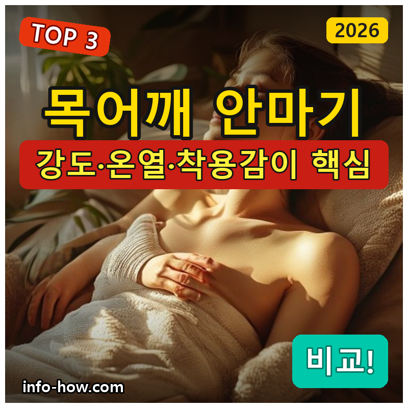
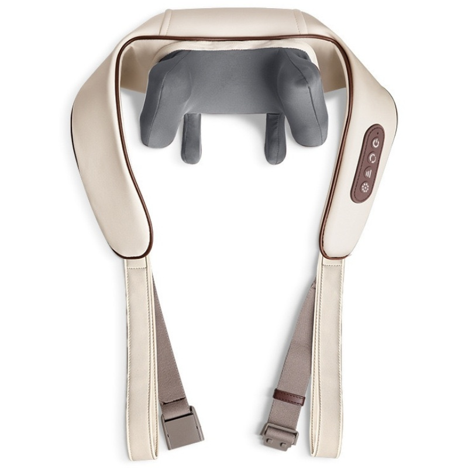
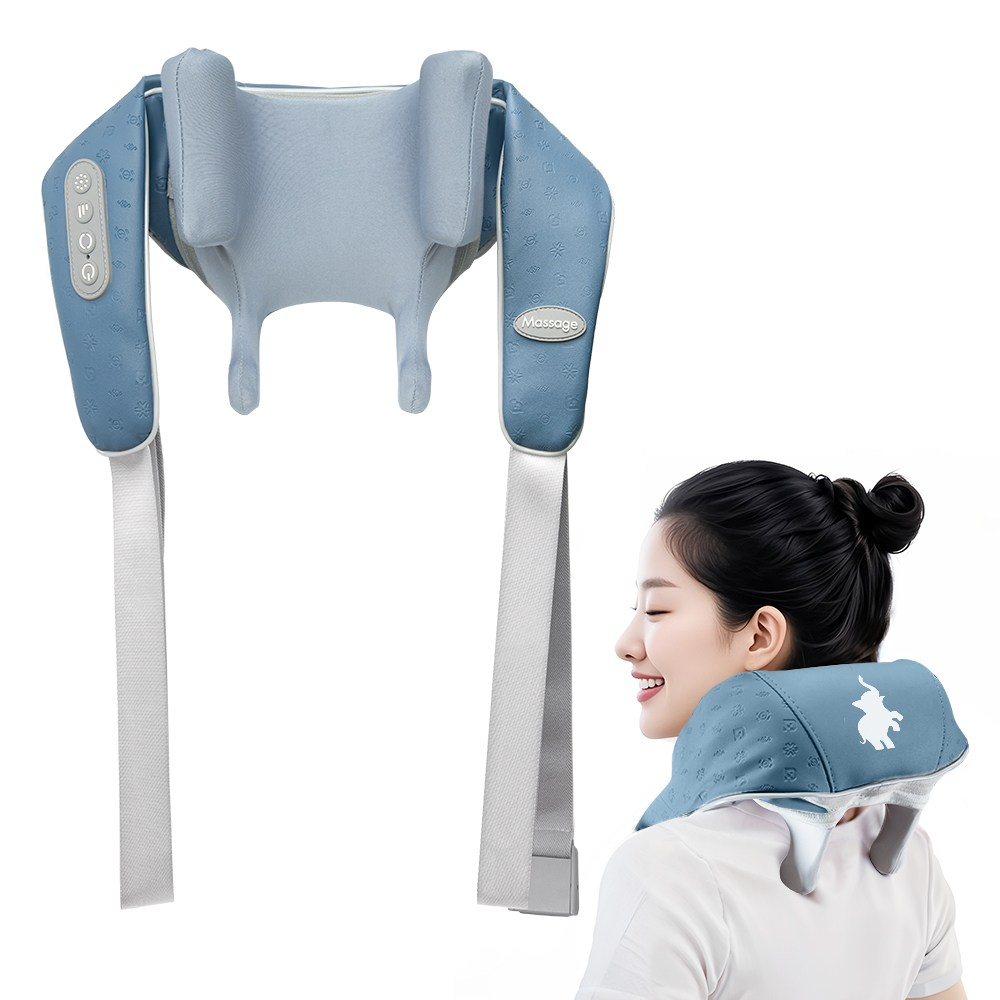
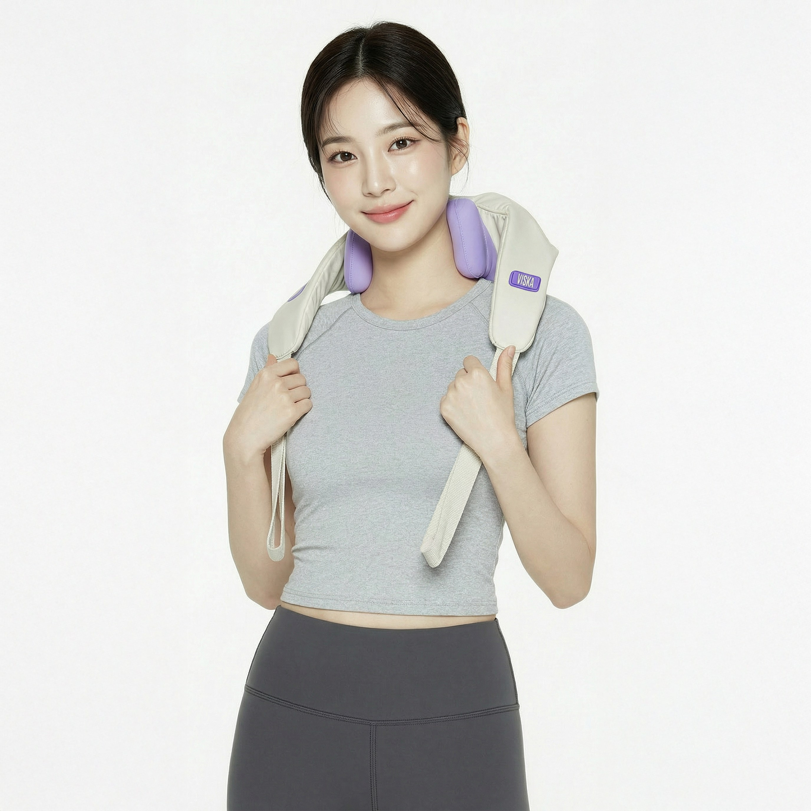

홈 › 제품리뷰 › 뷰티/헬스
목어깨 안마기, 무선 온열이냐 지압 강도냐
작성: 생활서식 모음 · 2026-07-18

파트너스 활동의 일환으로 일정액의 수수료를 지급받습니다
🛒 오늘의 쿠팡 특가 보러가기 →
목어깨 안마기, 다 비슷해 보여서 고르기 어렵죠?
핵심은 "강도(지압)와 온열, 착용감" 3대 를※ 안마기는 피로한 근육 이완·휴식용 기기이며, 질병 치료 목적이 아닙니다.
📋 목차
목어깨 안마기, 무선 온열이냐 지압 강도냐 — 결론 먼저 스펙 비교표: 한눈에 보기 목어깨 안마기 고를 때 봐야 할 4가지 가볍게냐 강하게냐, 뭘 사야 할까? 자주 묻는 질문 (FAQ) 결론: 한 줄 요약
목어깨 안마기, 무선 온열이냐 지압 강도냐 — 결론 먼저
목어깨 안마기는 "강도와 착용감" 으로 갈려요.릴렉스파 3D텐션 처럼 강도·온열·착용감 밸런스가 좋은 제품이 무난합니다. 가볍게 저렴하게면 기본 무선 온열, 지압을 강하게 원하면 지압 특화 프리미엄입니다.
1 입문·가성비 (가성비 초이스)
가성비

2만원대 무선 온열
1. 무선 온열 목어깨 3D텐션 안마기
2만원대 무선 온열 3D텐션 지압 볼 선 없이 목에 걸어 사용
고급형은 아니어도
추천 대상
목어깨 안마기를 처음 저렴하게 써볼 분 선 없이 목에 걸어 쓰고 싶은 분 온열 기능을 원하는 분 장점
2만원대로 부담 없이 무선 온열 안마기를 마련 3D텐션 지압 볼이 목·어깨를 눌러 이완에 도움 무선이라 선 걸림 없이 목에 걸어 사용 단점
지압 강도·내구는 상위 브랜드 제품보다 아쉬울 수 있음 입문·가성비엔 딱이지만, 강도·승모근 지압 을 제대로 원하면 3번, 브랜드 밸런스면 2번입니다. "일단 무선 온열"이면 이 가성비가 부담 없어요.
한줄 리뷰
"목어깨 안마기가 처음"이면 2만원대로 경험하기 좋습니다. 온열+3D텐션으로 기본은 하고요. 강한 지압·내구를 원하면 2·3번을 보세요.
주요 스펙
제품: 무선 온열 목어깨 3D텐션 안마기 방식: 무선 · 온열 · 3D텐션 지압 용도: 목·어깨·승모근 이완 배송: 로켓배송 가격: 약 26,880원 (변동 가능) ※ 실제 스펙·가격과 차이가 있을 수 있습니다
2 재택·사무 (베스트 초이스)
베스트

3D텐션 밸런스
2. 릴렉스파 목어깨 3D텐션 안마기
3D텐션 지압 밸런스 온열 + 무선 편의 강도·착용감 두루 무난
강도·온열·착용감이 두루 무난한
추천 대상
집·사무실에서 두루 쓰는 분 강도와 착용감 밸런스를 원하는 분 무난한 브랜드 제품을 원하는 분 장점
3D텐션 지압이 목·어깨 뭉침 이완에 도움 온열+무선이라 편하게 두루 사용 강도·착용감 밸런스가 좋아 가족이 함께 쓰기 무난 단점
아주 강한 지압·승모근 집중은 3번이 더 나을 수 있음 저렴하게면 1번, 지압을 강하게·승모근 집중이면 3번입니다. 2번은 "강도+착용감 밸런스" 의 실속 구간 — 두루 쓰기 가장 무난합니다.
한줄 리뷰
"집·사무실 겸용으로 무난하게"면 이 3D텐션이 밸런스가 좋습니다. 강도·온열·착용감이 두루 준수해요. 아주 강한 지압을 원하면 3번을 보세요.
주요 스펙
제품: 릴렉스파 목어깨 3D텐션 안마기 방식: 3D텐션 지압 · 온열 · 무선 용도: 목·어깨 이완(재택·사무) 배송: 로켓배송 가격: 약 31,900원 (변동 가능) ※ 실제 스펙·가격과 차이가 있을 수 있습니다
3 강한 지압·승모근 (프리미엄)
프리미엄

지압·승모근 특화
3. 비스카 목어깨 지압 온열 안마기
강한 지압 + 승모근 집중 온열로 이완 강화 묵직한 압을 원하는 분에게
눌리는 압이 확실한 지압형
추천 대상
약한 안마기에 만족 못 한 분 승모근·뭉침을 강하게 풀고 싶은 분 온열+강한 지압을 원하는 분 장점
지압 강도가 강해 뭉친 승모근·어깨 이완에 도움 온열이 더해져 이완 효과를 높임 묵직한 압을 원하는 분에게 만족도가 높음 단점
강도가 세서 자극에 민감한 분은 부담스러울 수 있음 자극이 부담되거나 저렴하게면 1·2번이 낫습니다. 3번은 강한 지압·승모근 집중 을 원하는 분에게 어울립니다. 처음엔 약하게 시작해 강도를 올리세요.
한줄 리뷰
"약한 안마기는 시원한 맛이 없다"는 분에게 강한 지압형이 맞습니다. 승모근 뭉침에 특히 만족도가 높아요. 다만 자극에 민감하면 2번 밸런스형이 안전합니다.
주요 스펙
제품: 비스카 목어깨 지압 온열 안마기 방식: 강한 지압 · 온열 · 승모근 집중 용도: 강한 목·어깨 이완 배송: 로켓배송 가격: 약 49,000원 (변동 가능) ※ 실제 스펙·가격과 차이가 있을 수 있습니다
스펙 비교표: 한눈에 보기
가격·풍량·무게 중 본인에게 중요한 기준부터 보세요. "최고" 표시는 3제품 중 객관적 1위 값입니다.
← 좌우로 스크롤 →
목어깨 안마기 고를 때 봐야 할 4가지
강도·착용감만 맞춰도 "약해서 안 쓰거나 아파서 못 쓰는" 실패를 막습니다.
1) 강도 — 약하면 시원한 맛, 세면 부담
너무 약하면 시원한 맛이 없어 안 쓰게 됨 너무 세면 자극이 부담 — 강도 조절 단계가 있으면 좋음 자극에 민감하면 밸런스형, 강한 지압을 원하면 지압 특화 2) 온열 — 이완에 도움
온열이 있으면 근육 이완에 도움이 되어 체감이 좋음 여름엔 온열을 끌 수 있는지도 확인 온도 조절·자동 꺼짐(안전) 기능이 있으면 안심 3) 착용감·무선 — 오래 쓰려면
목에 거는 형태는 어깨 곡선에 잘 맞는지가 중요 무선이면 선 걸림 없이 집안일하며 사용 가능 무게가 무거우면 오래 착용이 부담 4) 부위 — 목·어깨·승모근·허리
제품마다 집중 부위(목/어깨/승모근/허리)가 다름 승모근 뭉침이 고민이면 승모근 집중형 허리까지 쓰려면 겸용 가능한지 확인 가볍게냐 강하게냐, 뭘 사야 할까?
강도 취향과 용도만 정하면 답이 나옵니다.
입문·가성비: 1번 무선 온열 3D텐션 → 2만원대재택·사무 밸런스: 2번 릴렉스파 → 강도+착용감강한 지압·승모근: 3번 비스카 → 묵직한 압자주 묻는 질문 (FAQ)
Q1. 목어깨 안마기, 강한 게 무조건 좋은가요? 아닙니다. 강도는 취향과 몸 상태에 맞아야 합니다. 너무 약하면 시원한 맛이 없어 안 쓰게 되고, 너무 세면 오히려 자극이 부담스러워 불편할 수 있습니다. 강도 조절 단계가 있는 제품이 좋고, 자극에 민감하다면 처음엔 약하게 시작해 서서히 올리는 게 안전합니다. 근육·관절에 통증이나 질환이 있다면 사용 전 전문가와 상담하세요.
Q2. 온열 기능이 꼭 필요한가요? 필수는 아니지만 있으면 만족도가 올라갑니다. 온열은 근육 이완에 도움이 되어 마사지 체감을 높여줍니다. 다만 여름철이나 열이 부담스러운 분은 온열을 끌 수 있는지 확인하세요. 온도 조절과 일정 시간 후 자동으로 꺼지는 안전 기능이 있으면 더 안심하고 쓸 수 있습니다.
Q3. 하루에 얼마나 쓰는 게 좋나요? 제품 설명서의 권장 사용 시간을 따르는 것이 기본입니다. 보통 한 번에 10~15분 정도를 권장하는 경우가 많고, 같은 부위를 너무 오래 강하게 자극하는 것은 피하는 게 좋습니다. 안마기는 피로한 근육을 풀어 휴식을 돕는 기기이지 치료 기기가 아니므로, 통증이 지속되면 사용을 멈추고 전문가의 진료를 받으세요.
Q4. 어깨 곡선에 안 맞아서 불편한 경우가 있나요? 있습니다. 목에 거는 형태는 사람마다 어깨 곡선·목 길이가 달라 밀착감이 다르게 느껴집니다. 밀착이 안 되면 지압 볼이 제대로 닿지 않아 효과가 떨어집니다. 착용감·밀착 관련 실사용 후기를 확인하고, 팔로 눌러 압을 조절할 수 있는 형태(팔걸이형)는 밀착 부담을 줄여주기도 합니다.
Q5. 안마기를 쓰면 안 되는 경우도 있나요? 있습니다. 임신 중이거나, 혈전·심장 질환, 피부 질환, 골다공증, 최근 수술 부위 등 특정 건강 상태에서는 마사지 기기 사용에 주의가 필요합니다. 목·어깨에 지속적인 통증이나 저림이 있다면 단순 근육 피로가 아닐 수 있으므로 임의로 강하게 자극하지 말고 병원 진료를 먼저 받는 것이 안전합니다. 안마기는 어디까지나 피로 완화·휴식 보조용입니다.
결론: 한 줄 요약
1) 무선 온열 3D텐션 — 약 26,880원 / 입문·가성비. 2만원대 무선 온열, 부담 없이 시작.2) 릴렉스파 3D텐션 — 약 31,900원 / 재택·사무. 강도+착용감 밸런스 실속.3) 비스카 지압 온열 — 약 49,000원 / 강한 지압. 승모근 뭉침 묵직하게.이 포스팅은 쿠팡 파트너스 활동의 일환으로, 이에 따른 일정액의 수수료를 제공받습니다.